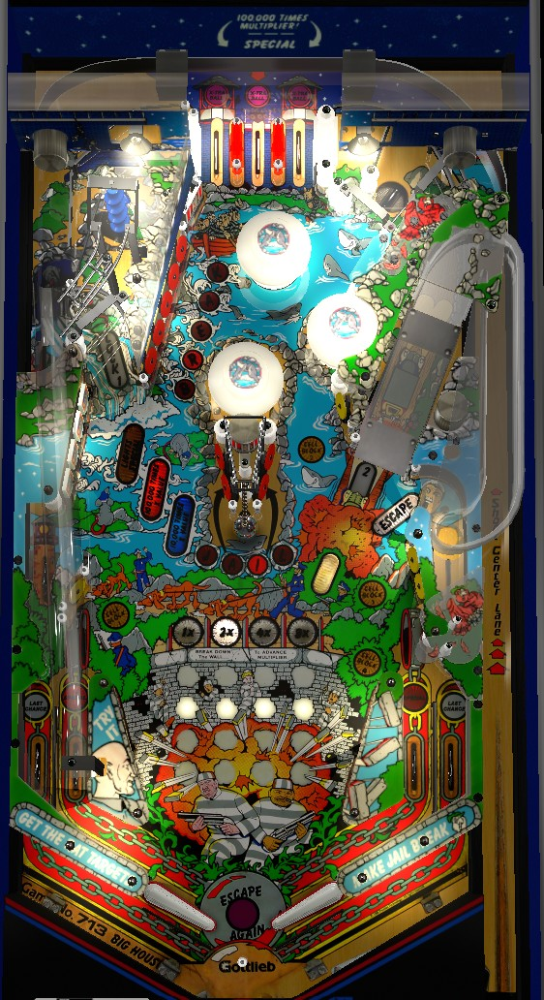

Try to always be in multiball. Lock 1 is at the upper left lane; with one ball locked, you can either lock a second ball at the right ramp, or start multiball at the right Escape lane. Hitting switches around the playfield advances the game multiplier, which applies to drop target awards, end of ball bonus, or skill shots to the center top lane that can be earned on any plunge or by shooting the Lock 1 lane while a ball is already locked there. Hitting all 4 yellow Cell Block targets lights an extra ball at the top lanes, and spelling Jail and Break in order at the red standup targets lights a Special at the center top lane.
The below picture of Big House's playfield was taken from the VPX recreation by Aubrel and Rascal. This recreation includes a center post below the flippers not present on retail games.

Unlit top lanes score 3,000 points.
On any plunge or after shooting the Lock 1 lane in the top left while a ball is already locked there, the center top lane will flash for 100,000 points times the game multiplier (explained below). This scoring feature is turned off when any other switch in the game is hit.
After completing the Cell Block targets, one top lane will be lit for extra ball. This lane rotates with each pop bumper hit (NO flipper lane change) and scores 500,000 in competition/novelty play.
After completing both Jail and Break in order on the same ball, the center top lane is lit for Special, which scores 500,000 in competition/novelty play.
Any scoring switch in the game makes progress toward advancing the game multiplier, shown by the grid of lights in the middle of the playfield. As more switches are hit, more of the grid will unlight. When the whole grid is unlit, it resets and the game multiplier is increased by 1, up to a maximum of 15x. The game multiplier applies to the center top lane skill shot, the end of ball bonus, and the "times multiplier" awards from the left drop targets. The game multiplier does not reset from ball to ball, so it is important to get it as high as possible early in the game.
In single ball play, at least one lock is always lit. Lock #1 is at the top left lane. Shooting the ball into the top left lane when Lock 1 has already been made will cause the ball to be kicked to the top lanes, where the center top lane will flash for another 100,000-times-game-multiplier skill shot. When Lock 1 has been made, you have two options: shoot underneath the raised right ramp to make lock 2, or shoot the Escape lane on the right to start 2-ball multiball. If you make lock 2 first, you can start 3-ball multiball by either shooting the now-lowered right ramp, or shooting the Escape lane.
In a single player game, if you lock one or more balls but do not start multiball before draining, all locked balls are kicked out and you must start over on the next ball. In a multiplayer game, all locks are held from player to player and ball to ball, with full lock stealing being available.
There are no multiball-specific scoring features. Use multiball to have more balls hit more things around the playfield to try to increase the game multiplier. During multiball, one row of the score display will serve as a meter showing in fine detail how much progress has been made toward completing the current wall and advancing the game multiplier. A ball shot into any lock while there is more than 1 ball in play is immediately kicked out; for Lock 1, this means popping the ball toward the left in lane rather than up to the top lanes, so the center top lane skill shot cannot be made during multiball. Regardless of its lack of short-term value, multiball should be played as frequently as possible, especially early in the game, since it is very easy to start and multiplies end of ball bonus and future skill shots.
Each drop target down scores 5,000 points. When all 4 targets are raised, hitting any of the targets starts a timer.
If the drop target bank is not completed within 10 seconds of the first target being knocked down, it resets.
4 yellow standup targets in the lower half of the playfield are labelled as Cell Blocks: one in the lower left, one just to the left of the right ramp, and two in the lower right. These targets always score 5,000 points. Hit a lit target to unlight it. Unlighting all 4 targets lights one top lane for Extra Ball, which can only be rotated between the lanes by pop bumper hits and scores 500,000 points in competition/novelty play. Completing the Cell Block targets while a top lane is already lit for extra ball scores 100,000 points, but does not light another top lane.
Hitting a flashing target scores 10,000 points, lights that target solidly, and moves the flashing target to the next letter in Jail or Break. Targets that are unlit or solidly lit score 3,000 points. Spelling both Jail (at the targets on either side of the center wrecking ball) and Break (at the upper left standup targets) will reset the targets and light the center top lane for Special, which scores 500,000 points in competition/novelty play. Completing both Jail and Break again while the center top lane is already lit for Special will in turn score an instant Special.
Scores 5,000 points. At times, it appears to be the case that this captive ball gives more credit toward breaking the Wall for a game multiplier than other switches in the game, but this may not be consistent. In any event, shooting the wrecking ball directly comes with a high center drain risk and should only be done sparingly and during multiball.
Scores 25,000 points and drops the ball into the left in lane.
Big House has a conventional in/out lane setup. In lanes are lit for Special, alternately based on slingshot hits, for 15 seconds after the upper left drop target bank is completed in 2 seconds or less. Out lanes are lit for Last Chance, alternately based on slingshot or bumper hits, only when one or two balls are locked during the final ball of the game; making an out lane lit for Last Chance causes the most recently locked ball to be kicked out, continuing your turn. This feature can only be used once.
There is no kickback, center post, or gate feature.
Bonus appears to simply be 1,000 points for each switch hit during the ball in play, times the game multiplier. There is no way to hold the base bonus from ball to ball or collect the bonus mid-ball, but the multiplier always carries over for the whole game.
Big House has a rare prototype variant whose score displays are above the translite on the top panel near the speakers rather than on the translite itself. Other differences include:
If you have played this version of Big House and know more about its potential rules differences, please reach out to us at pinballprimer@gmail.com